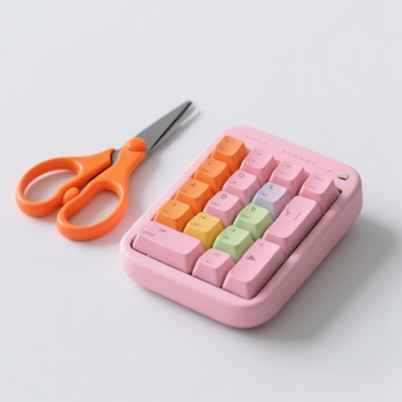
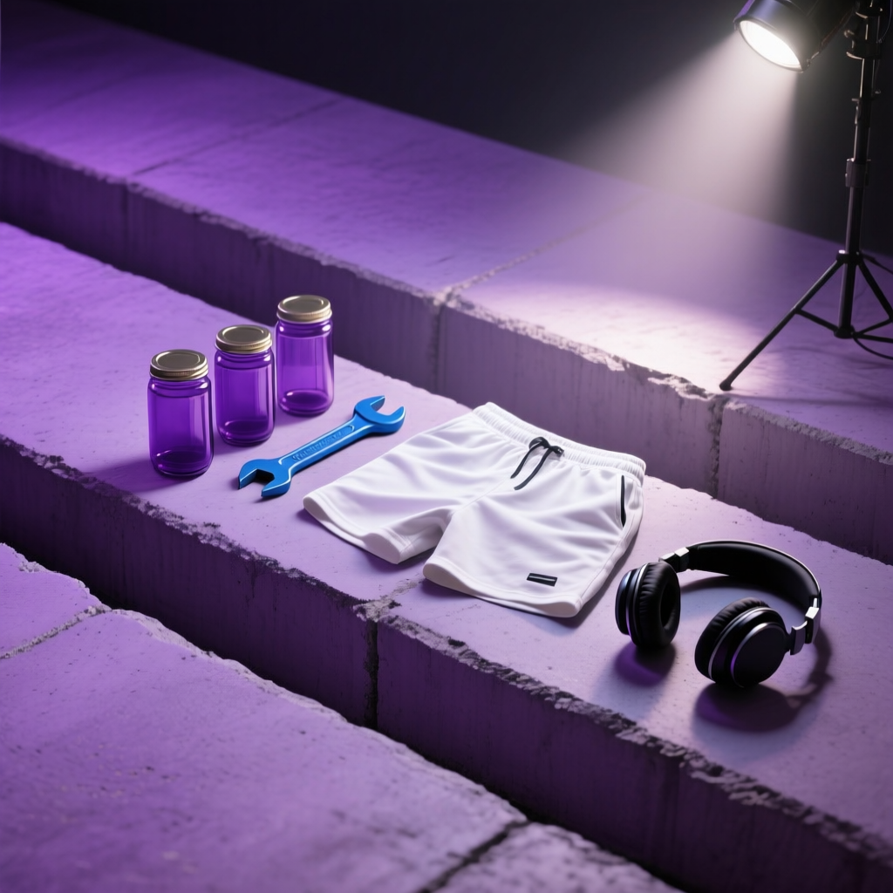
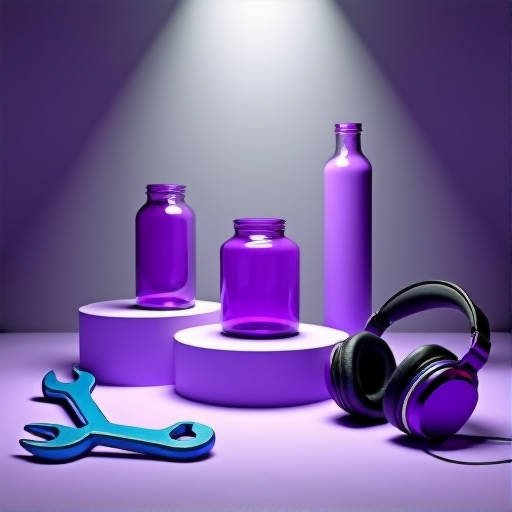
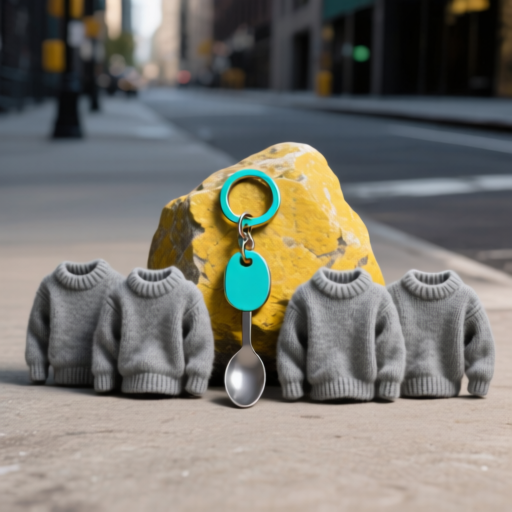
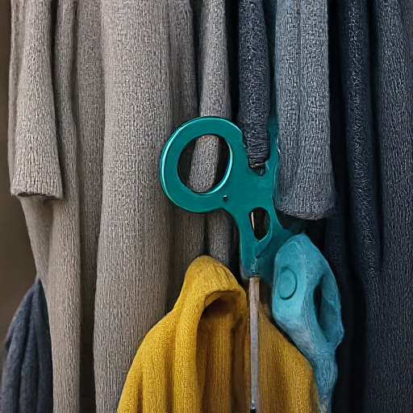
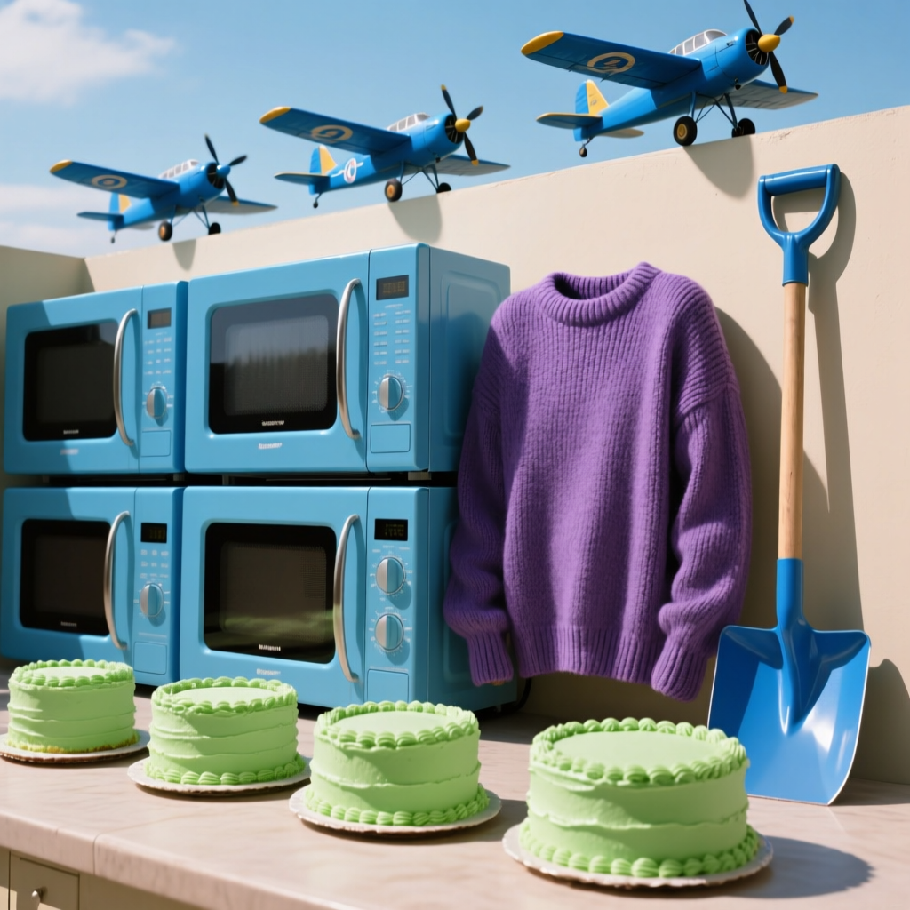
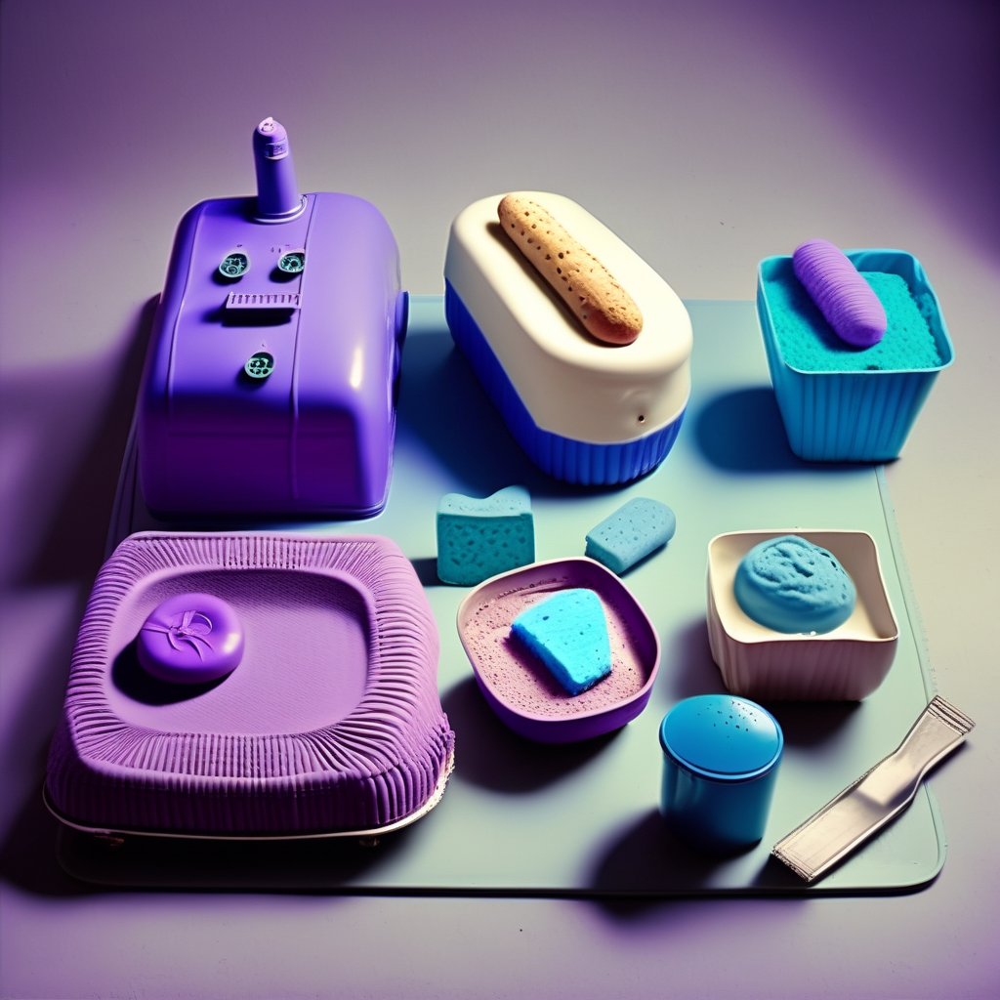
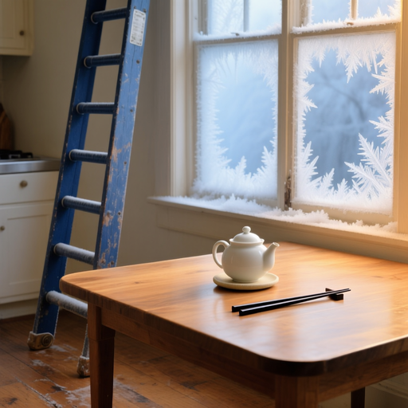
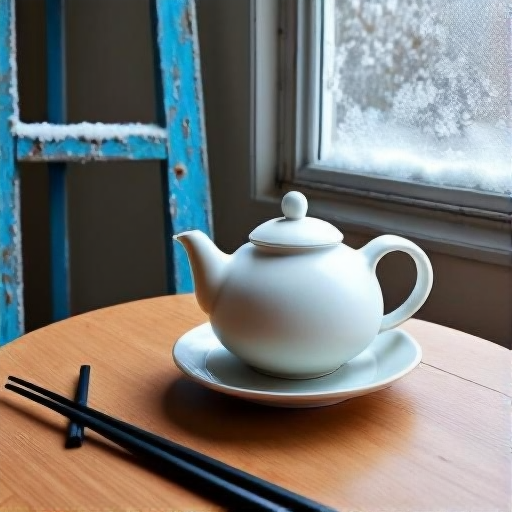
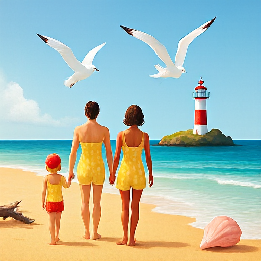

Internal Consistency
Contrast cases 4
OmniGen2#3
Und 1.0Gen 0.25Unify 0.259 inconsistent
Generation prompt
a pink computer keyboard with rounded edges sits to the bottom-right of a bright orange pair of scissors. the keyboard has seventeen keys visible, each with a distinct color, and the scissors are positioned at a 45-degree angle. the background is plain white, and both objects rest on a smooth, light gray surface.

| VQA question | Understand (on prompt) | Generate (on its image) |
|---|---|---|
| Are there seventeen visible keys on keyboard? | ✓ yes | ✗ no |
| Are the scissors on the surface? | ✓ yes | ✗ no |
| Is the keyboard on the surface? | ✓ yes | ✗ no |
| Is the surface white? | ✓ yes | ✓ yes |
| Is there a surface? | ✓ yes | ✓ yes |
| Is the keyboard's main color pink? | ✓ yes | ✗ no |
| Are the scissors bright orange? | ✓ yes | ✗ no |
| Is there a keyboard? | ✓ yes | ✗ no |
| Is the surface smooth? | ✓ yes | ✓ yes |
| Is there a pair of scissors? | ✓ yes | ✗ no |
| Do the keys have distinct colors? | ✓ yes | ✗ no |
| Is the keyboard to the bottom-right of the scissors? | ✓ yes | ✗ no |
BAGEL-7B-MoT#386
Und 0.826Gen 0.435Unify 0.39110 inconsistent
Generation prompt
white shorts, three purple concrete pathways, a blue wrench, three cylindrical purple glass glossy jars, and black headphones, where the shorts are atop the pathways, and the wrench is on the left of the shorts, and the jars are on the left of the shorts, and the headphones are on the right of the shorts, under a focused spotlight.


| VQA question | Understand (on prompt) | Generate (on its image) |
|---|---|---|
| Is the focused spotlight over the pathways? | ✓ yes | ✗ no |
| Is the focused spotlight over the shorts? | ✗ no | ✗ no |
| Are the jars purple? | ✓ yes | ✓ yes |
| Are there 3 jars? | ✓ yes | ✓ yes |
| Are there pathways? | ✓ yes | ✗ no |
| Are there jars? | ✓ yes | ✓ yes |
| Is the wrench blue? | ✓ yes | ✓ yes |
| Is there wrench? | ✓ yes | ✓ yes |
| Are the pathways purple? | ✓ yes | ✗ no |
| Is there headphones? | ✓ yes | ✓ yes |
| Are there 3 pathways? | ✓ yes | ✗ no |
| Is the focused spotlight over the headphones? | ✗ no | ✗ no |
| Is the focused spotlight over the wrench? | ✗ no | ✗ no |
| Is there shorts? | ✓ yes | ✗ no |
| Is the shorts white? | ✓ yes | ✗ no |
| Is the focused spotlight over the jars? | ✗ no | ✓ yes |
| Is jar glossy? | ✓ yes | ✓ yes |
| Is there focused spotlight? | ✓ yes | ✓ yes |
| Is the wrench on the left of the shorts? | ✓ yes | ✗ no |
| Is the headphones black? | ✓ yes | ✓ yes |
| Is the shorts atop the pathways? | ✓ yes | ✗ no |
| Is the headphones on the right of the shorts? | ✓ yes | ✗ no |
| Are the jars on the left of the shorts? | ✓ yes | ✗ no |
UniWorld-V1#451
Und 0.952Gen 0.143Unify 0.14317 inconsistent
Generation prompt
a turquoise metallic keychain is in front of a yellow stone rock and between four gray fabric ribbed sweaters, with four gray fabric sweaters in front of a yellow stone rock, with a gray metallic spoon between four gray fabric sweaters and below a turquoise metallic keychain, all on a city street, under professional studio lighting.


| VQA question | Understand (on prompt) | Generate (on its image) |
|---|---|---|
| Is there spoon? | ✓ yes | ✗ no |
| Is there stone rock? | ✓ yes | ✗ no |
| Is the keychain turquoise? | ✓ yes | ✗ no |
| Are the sweaters gray? | ✓ yes | ✓ yes |
| Is the spoon gray? | ✓ yes | ✗ no |
| Is there keychain? | ✓ yes | ✗ no |
| Is there professional studio lighting? | ✗ no | ✗ no |
| Is there city street? | ✓ yes | ✗ no |
| Is sweater ribbed? | ✓ yes | ✗ no |
| Are there sweaters? | ✓ yes | ✓ yes |
| Are there 4 sweaters? | ✓ yes | ✓ yes |
| Is the spoon on the city street? | ✓ yes | ✗ no |
| Is the stone rock yellow? | ✓ yes | ✗ no |
| Are the sweaters in front of the stone rock? | ✓ yes | ✗ no |
| Are the sweaters on the city street? | ✓ yes | ✗ no |
| Is the stone rock on the city street? | ✓ yes | ✗ no |
| Is the keychain on the city street? | ✓ yes | ✗ no |
| Is the spoon below the keychain? | ✓ yes | ✗ no |
| Is the spoon between the sweaters? | ✓ yes | ✗ no |
| Is the keychain in front of the stone rock? | ✓ yes | ✗ no |
| Is the keychain between the sweaters? | ✓ yes | ✗ no |
SEED-X-17B#407
Und 0.947Gen 0.0Unify 0.018 inconsistent
Generation prompt
a purple ribbed sweater, four rectangular blue microwaves, three blue airplanes, a blue shovel, and four green cakes, where the sweater is on the side of the microwaves, and the airplanes are behind the sweater, and the shovel is on the right of the sweater, and the cakes are in front of the sweater, in harsh daylight.


| VQA question | Understand (on prompt) | Generate (on its image) |
|---|---|---|
| Are there microwaves? | ✓ yes | ✗ no |
| Is there shovel? | ✓ yes | ✗ no |
| Are there 4 microwaves? | ✓ yes | ✗ no |
| Are the microwaves blue? | ✓ yes | ✗ no |
| Are there airplanes? | ✓ yes | ✗ no |
| Are there 3 airplanes? | ✓ yes | ✗ no |
| Are the airplanes blue? | ✓ yes | ✗ no |
| Is the shovel blue? | ✓ yes | ✗ no |
| Are there cakes? | ✓ yes | ✗ no |
| Are there 4 cakes? | ✓ yes | ✗ no |
| Is there sweater? | ✓ yes | ✗ no |
| Is sweater ribbed? | ✓ yes | ✗ no |
| Are the cakes in front of the sweater? | ✓ yes | ✗ no |
| Is the sweater purple? | ✓ yes | ✗ no |
| Are the airplanes behind the sweater? | ✗ no | ✗ no |
| Is the sweater on the side of the microwaves? | ✓ yes | ✗ no |
| Are the cakes green? | ✓ yes | ✗ no |
| Is there harsh daylight? | ✓ yes | ✗ no |
| Is the shovel on the right of the sweater? | ✓ yes | ✗ no |
good cases 4
OmniGen2#48
Und 1.0Gen 1.0Unify 1.0consistent ✓
Generation prompt
Three figures walk along golden sand near turquoise waves; two adults in yellow polka-dot swimwear, one child in red, holding hands. Two white seagulls with black-tipped wings soar above. A red-and-white striped lighthouse stands on a mossy rock island in the distance. A pink shell rests near driftwood.
| VQA question | Understand (on prompt) | Generate (on its image) |
|---|---|---|
| Is the shell pink? | ✓ yes | ✓ yes |
| Is there golden sand? | ✓ yes | ✓ yes |
| Are there seagulls? | ✓ yes | ✓ yes |
| Is there a rock island? | ✓ yes | ✓ yes |
| Is there a lighthouse? | ✓ yes | ✓ yes |
| Is the lighthouse on the rock island? | ✓ yes | ✓ yes |
| Is the rock island mossy? | ✓ yes | ✓ yes |
| Are the seagulls soaring? | ✓ yes | ✓ yes |
| Is there a child? | ✓ yes | ✓ yes |
| Are there adults? | ✓ yes | ✓ yes |
| Are there turquoise waves? | ✓ yes | ✓ yes |
| Is the lighthouse red-and-white striped? | ✓ yes | ✓ yes |
| Are the seagulls' wings black-tipped? | ✓ yes | ✓ yes |
| Are there two seagulls? | ✓ yes | ✓ yes |
| Is the lighthouse in the distance from the figures? | ✓ yes | ✓ yes |
| Are there three figures? | ✓ yes | ✓ yes |
| Is the pink shell near the driftwood? | ✓ yes | ✓ yes |
| Is there a pink shell? | ✓ yes | ✓ yes |
| Is there moss? | ✓ yes | ✓ yes |
| Are the seagulls above the figures? | ✓ yes | ✓ yes |
| Are the figures holding hands with each other? | ✓ yes | ✓ yes |
| Are there figures? | ✓ yes | ✓ yes |
| Are there wings? | ✓ yes | ✓ yes |
| Are the adults wearing yellow polka-dot swimwear? | ✓ yes | ✓ yes |
| Are the figures near the golden sand? | ✓ yes | ✓ yes |
| Are the seagulls white? | ✓ yes | ✓ yes |
| Are the figures near the turquoise waves? | ✓ yes | ✓ yes |
| Is the child wearing red? | ✓ yes | ✓ yes |
| Are the figures walking? | ✓ yes | ✓ yes |
| Is there driftwood? | ✓ yes | ✓ yes |
BAGEL-7B-MoT#40
Und 1.0Gen 1.0Unify 1.0consistent ✓
Generation prompt
One white rounded ceramic teapot with a lid sits on a round saucer atop a smooth wooden table; two black straight chopsticks lie beside it, near a blue weathered ladder leaning against the wall beside a frost-covered window.


| VQA question | Understand (on prompt) | Generate (on its image) |
|---|---|---|
| Is the teapot on the saucer? | ✓ yes | ✓ yes |
| Is the saucer on the table? | ✓ yes | ✓ yes |
| Are the chopsticks straight? | ✓ yes | ✓ yes |
| Are the chopsticks black? | ✓ yes | ✓ yes |
| Are the chopsticks beside the teapot? | ✓ yes | ✓ yes |
| Is there a ladder? | ✓ yes | ✓ yes |
| Is the ladder weathered? | ✓ yes | ✓ yes |
| Is the ladder blue? | ✓ yes | ✓ yes |
| Is the ladder beside the window? | ✓ yes | ✓ yes |
| Is the window frost-covered? | ✓ yes | ✓ yes |
| Is the teapot made of ceramic? | ✓ yes | ✓ yes |
| Is there a saucer? | ✓ yes | ✓ yes |
| Is the teapot white? | ✓ yes | ✓ yes |
| Is the teapot rounded? | ✓ yes | ✓ yes |
| Is there a teapot? | ✓ yes | ✓ yes |
| Does the teapot have a lid? | ✓ yes | ✓ yes |
| Is there a window? | ✓ yes | ✓ yes |
| Is the ladder leaning against the wall? | ✓ yes | ✓ yes |
| Is there a table? | ✓ yes | ✓ yes |
| Is the saucer round? | ✓ yes | ✓ yes |
| Is the table smooth? | ✓ yes | ✓ yes |
| Is the table made of wood? | ✓ yes | ✓ yes |
| Are there chopsticks? | ✓ yes | ✓ yes |
| Are there two chopsticks? | ✓ yes | ✓ yes |
UniWorld-V1#48
Und 1.0Gen 0.933Unify 0.9332 inconsistent
Generation prompt
Three figures walk along golden sand near turquoise waves; two adults in yellow polka-dot swimwear, one child in red, holding hands. Two white seagulls with black-tipped wings soar above. A red-and-white striped lighthouse stands on a mossy rock island in the distance. A pink shell rests near driftwood.


| VQA question | Understand (on prompt) | Generate (on its image) |
|---|---|---|
| Is the shell pink? | ✓ yes | ✓ yes |
| Is there golden sand? | ✓ yes | ✓ yes |
| Are there seagulls? | ✓ yes | ✓ yes |
| Is there a rock island? | ✓ yes | ✓ yes |
| Is there a lighthouse? | ✓ yes | ✓ yes |
| Is the lighthouse on the rock island? | ✓ yes | ✓ yes |
| Is the rock island mossy? | ✓ yes | ✓ yes |
| Are the seagulls soaring? | ✓ yes | ✓ yes |
| Is there a child? | ✓ yes | ✓ yes |
| Are there adults? | ✓ yes | ✓ yes |
| Are there turquoise waves? | ✓ yes | ✓ yes |
| Is the lighthouse red-and-white striped? | ✓ yes | ✓ yes |
| Are the seagulls' wings black-tipped? | ✓ yes | ✓ yes |
| Are there two seagulls? | ✓ yes | ✓ yes |
| Is the lighthouse in the distance from the figures? | ✓ yes | ✓ yes |
| Are there three figures? | ✓ yes | ✓ yes |
| Is the pink shell near the driftwood? | ✓ yes | ✗ no |
| Is there a pink shell? | ✓ yes | ✓ yes |
| Is there moss? | ✓ yes | ✓ yes |
| Are the seagulls above the figures? | ✓ yes | ✓ yes |
| Are the figures holding hands with each other? | ✓ yes | ✓ yes |
| Are there figures? | ✓ yes | ✓ yes |
| Are there wings? | ✓ yes | ✓ yes |
| Are the adults wearing yellow polka-dot swimwear? | ✓ yes | ✓ yes |
| Are the figures near the golden sand? | ✓ yes | ✓ yes |
| Are the seagulls white? | ✓ yes | ✓ yes |
| Are the figures near the turquoise waves? | ✓ yes | ✓ yes |
| Is the child wearing red? | ✓ yes | ✓ yes |
| Are the figures walking? | ✓ yes | ✗ no |
| Is there driftwood? | ✓ yes | ✓ yes |
SEED-X-17B#72
Und 0.941Gen 0.941Unify 0.8821 inconsistent
Generation prompt
One black rectangular smartphone with a blue screen displaying white text "facebook" rests on textured blue denim, near a golden pants button and yellow stitching.

| VQA question | Understand (on prompt) | Generate (on its image) |
|---|---|---|
| Is the denim textured? | ✓ yes | ✓ yes |
| Is the smartphone near the stitching? | ✓ yes | ✓ yes |
| Is the smartphone near the pants button? | ✓ yes | ✓ yes |
| Is the smartphone on the denim? | ✓ yes | ✓ yes |
| Is the pants button golden? | ✓ yes | ✓ yes |
| Does the text say "facebook"? | ✓ yes | ✗ no |
| Is the stitching yellow? | ✓ yes | ✓ yes |
| Is the screen blue? | ✓ yes | ✓ yes |
| Is there a smartphone? | ✓ yes | ✓ yes |
| Is the text white? | ✓ yes | ✓ yes |
| Is there a screen? | ✓ yes | ✓ yes |
| Is there denim? | ✓ yes | ✓ yes |
| Is there text? | ✓ yes | ✓ yes |
| Is there stitching? | ✓ yes | ✓ yes |
| Is the smartphone black? | ✓ yes | ✓ yes |
| Is there a pants button? | ✗ no | ✓ yes |
| Is the smartphone rectangular? | ✓ yes | ✓ yes |